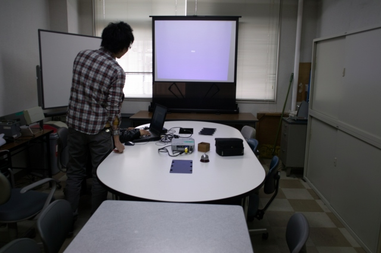
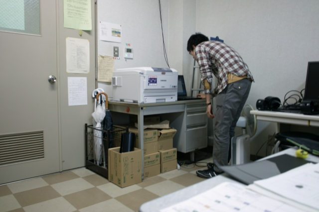
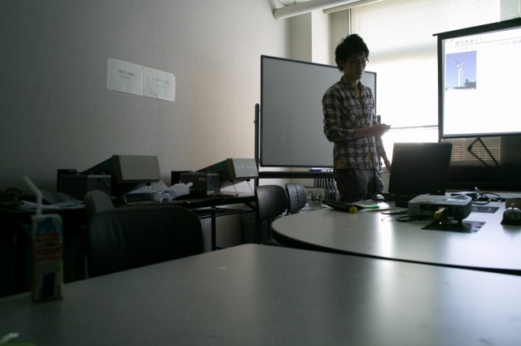
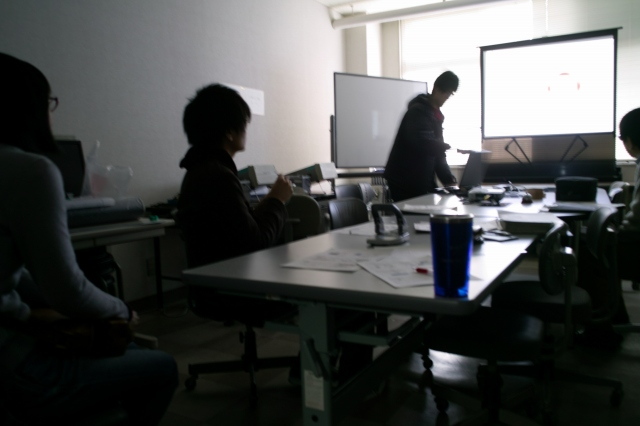
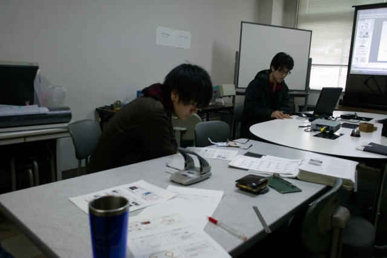
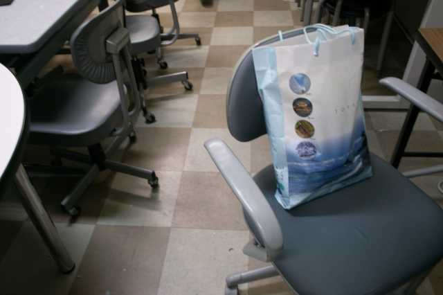
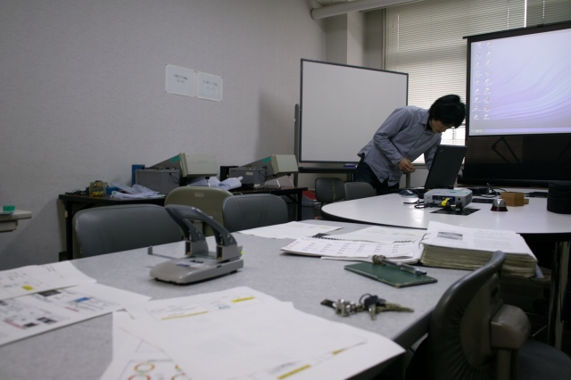
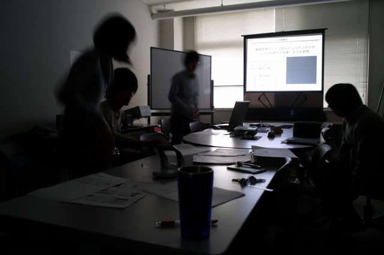
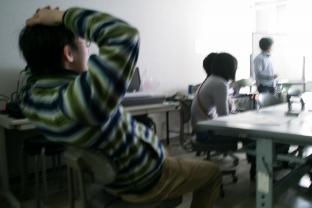
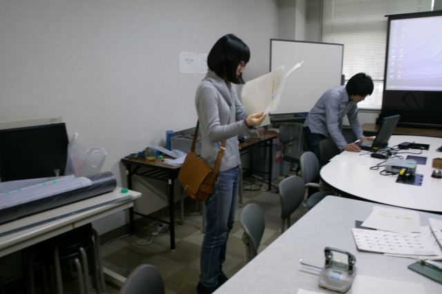

| ・1回目修論・卒論発表リハーサル (H24.02.10) | |||
0回目リハーサルから半月が経ち、論文提出直前ですが1回目のリハーサルです。論文執筆で忙しく、人の発表を聞いている余裕が無いので、自分の番だけ参加です。あと、練習どころじゃない人は執筆に集中。というわけで3人のリハーサルです。M1は突っ込み担当です。 |
|||
|

PCの解像度を下げて |

I上くん資料印刷中 | ||
|

まずはI上くん、一目瞭然の結果です！ |

次はT永くん、32ch完成！ | ||
|

K城くんチェック中 |

T永くんの研究袋、全ての資料が入ってます | ||
|

でM下くん、結果の多さで圧倒！ |

シート枚数も圧倒、多いよ！ | ||
|

H野先輩リラックス中 |

K岡先輩のチェック | ||